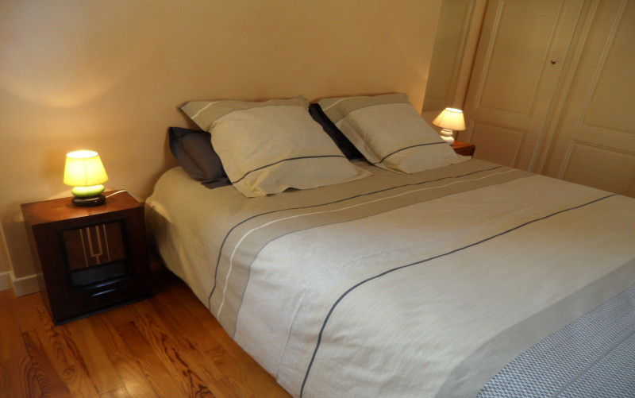
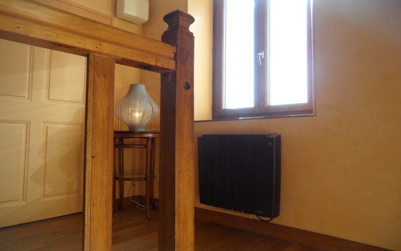

Gîte des Echudes, Dombes Beaujolais et Val de Saône
Un gîte calme et sympathique à la campagne
Le Gite des Echudes peut accueillir 2 à 6 personnes dans la maison du propriétaire avec entrée indépendante.


Gîte des Echudes à Saint Etienne sur Chalaronne
Situé à 25 minutes de Macon et à 10 minutes de Châtillon sur Chalaronne, le gîte des Echudes est idéalement placé pour répondre à vos besoins lors de déplacements professionnels, départ en vacances, fête de famille… C’est une maison chaleureuse avec plusieurs espaces de vie qui raviront les petits et les grands. Les lieux à visiter dans la région sont nombreux. Le gîte des Echudes vous propose des services variés et adaptés à vos besoins.